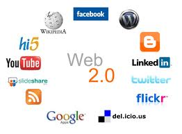

Línea del Tiempo Evolución de la Web
La Web 1.0

La Web 1.0 tiene sus inicios en la década de los 90's
La Web 2.0

La Web 2.0 es un término que describe la evolución de la World Wide Web hacia una experiencia más interactiva y colaborativa para los usuarios, con la inclusión de blogs, redes sociales, wikis y aplicaciones en línea.
La Web 3.0

La Web 3.0 es la tercera generación de la World Wide Web, que se caracteriza por ser más inteligente y semántica. La Web 3.0 utiliza tecnologías como la inteligencia artificial, el aprendizaje automático y la Web semántica para mejorar la búsqueda y recopilación de información en línea.
La Web 4.0

La Web 4.0 se refiere a la cuarta generación de la World Wide Web, enfocada en la integración de tecnologías avanzadas como la realidad aumentada, la internet de las cosas y la inteligencia artificial para mejorar la interacción humana con la tecnología y la información en línea. La Web 4.0 busca crear una experiencia más inmersiva y personalizada.
Regresar al inicio